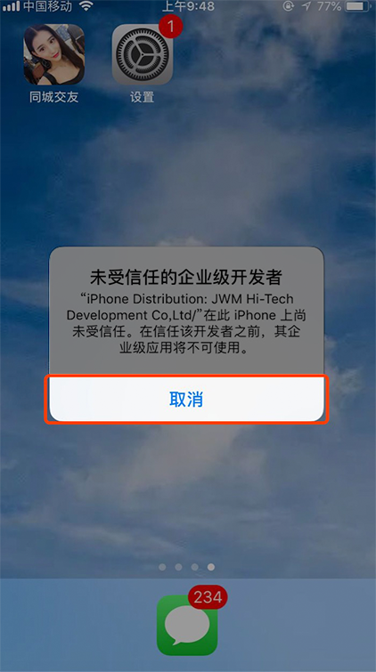
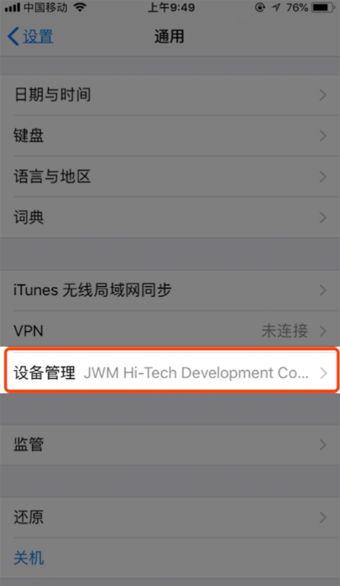
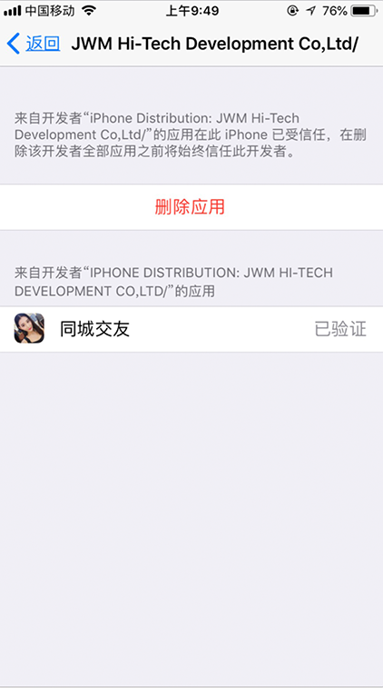
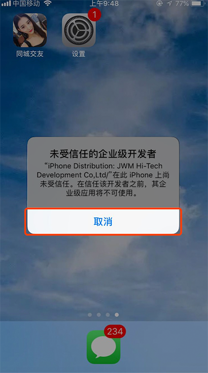
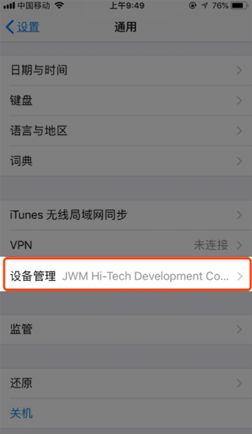
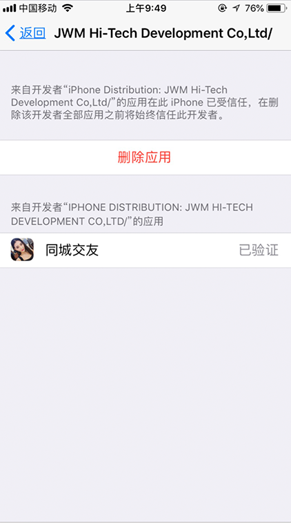

IOS9及以上系统用户，安装后请按以下步骤操作
1.点击同城交友图标，在“未受信任的企业级开发者”浮层，点击取消
2.浮层消失后，找到设置-通用-设备管理
3.选择信任企业级应用JWM-Hi-Tech Development Co...
4.设置成功后，就可以返回桌面，点击同城交友图标，打开应用了
返回顶部IOS9及以上系统用户，安装后请按以下步骤操作
1.点击同城交友图标，在“未受信任的企业级开发者”浮层，点击取消
2.浮层消失后，找到设置-通用-设备管理
3.选择信任企业级应用JWM-Hi-Tech Development Co...
4.设置成功后，就可以返回桌面，点击同城交友图标，打开应用了
返回顶部